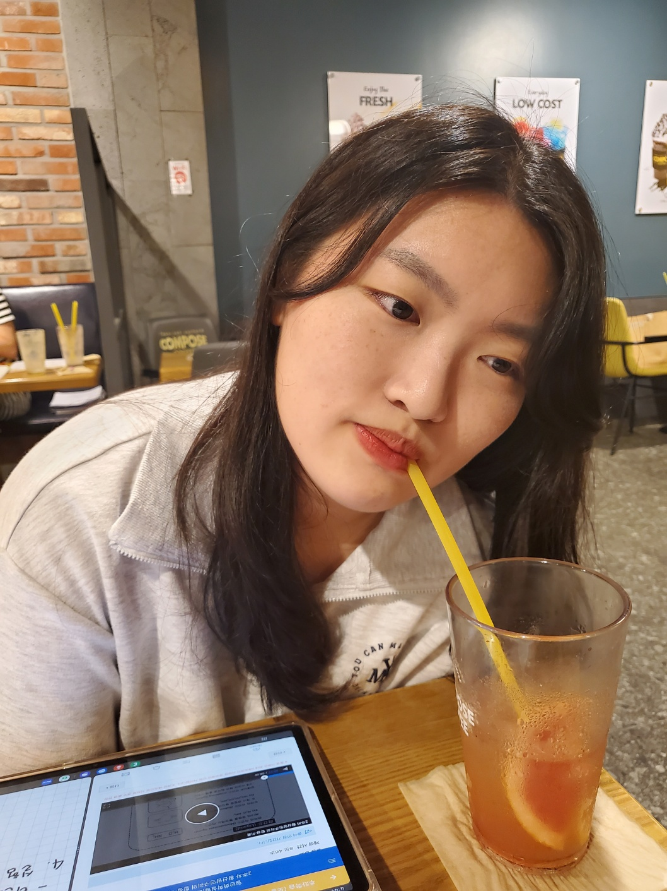
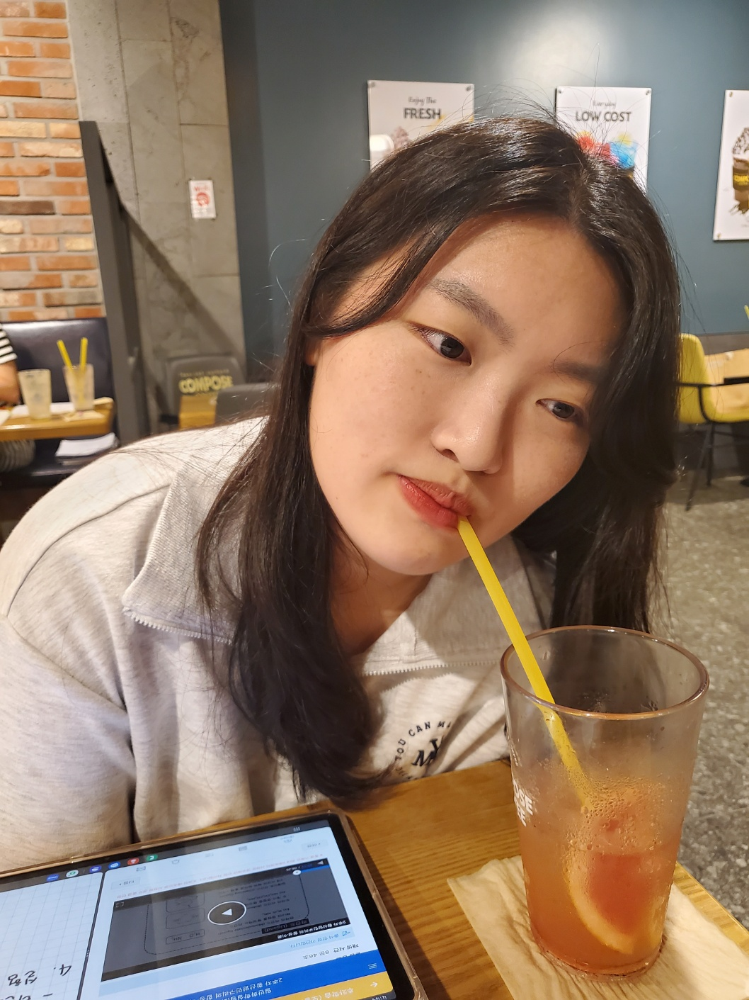
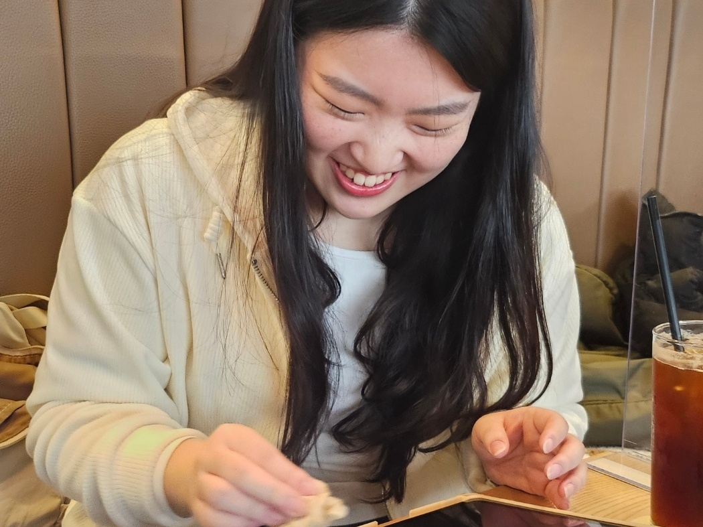
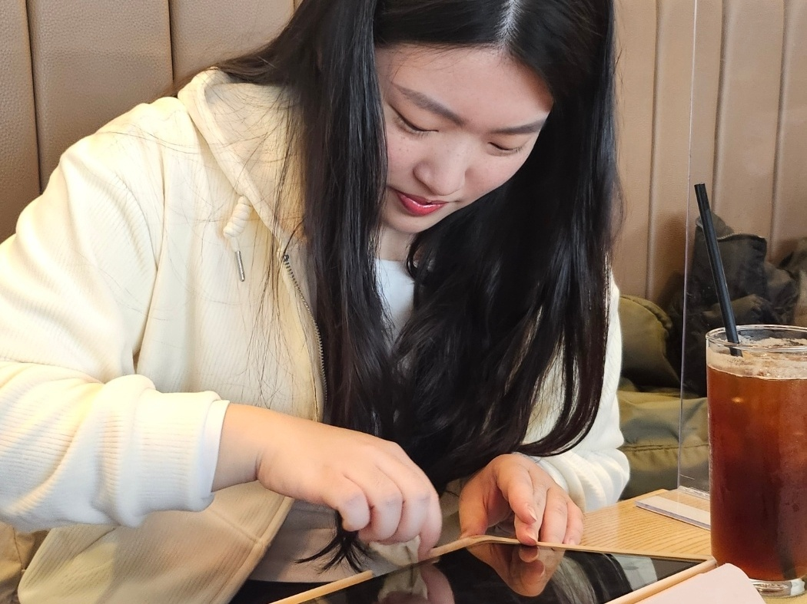
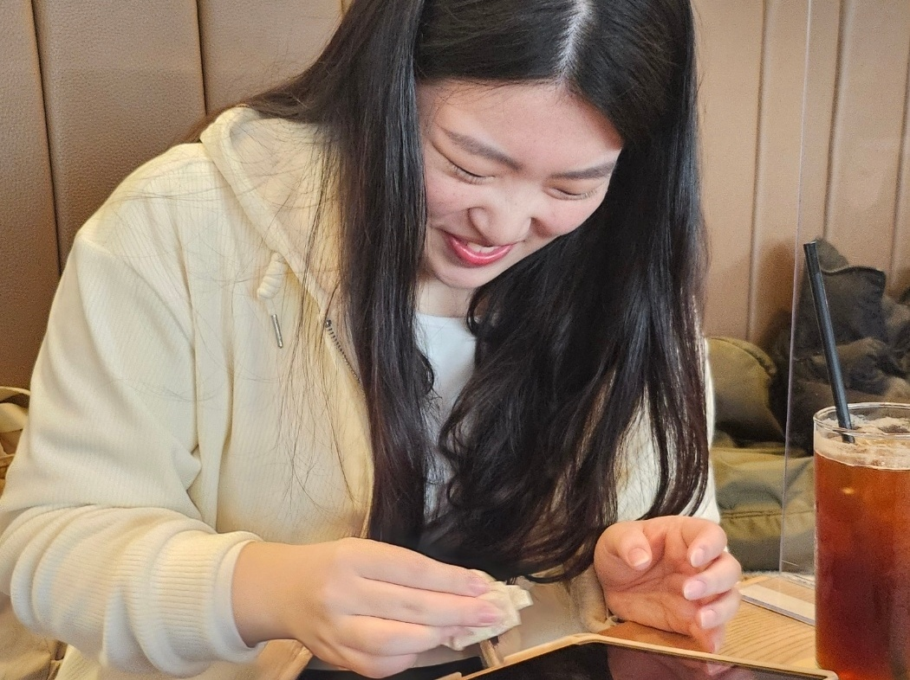
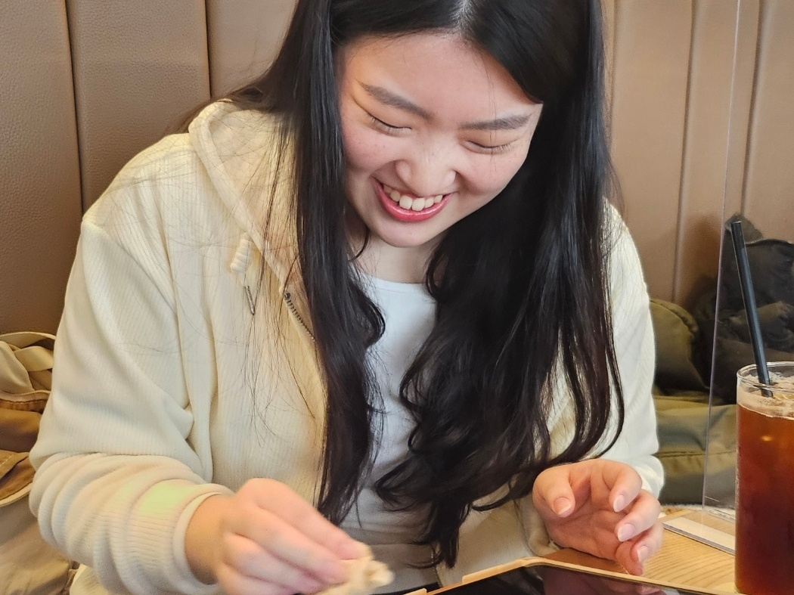
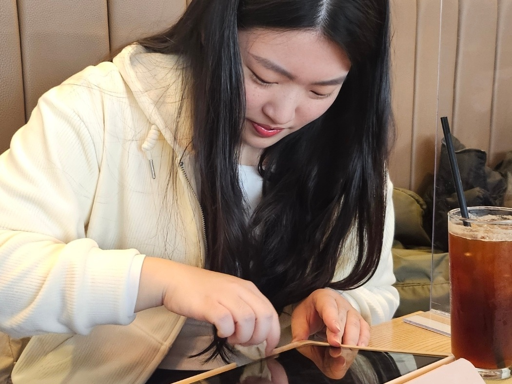
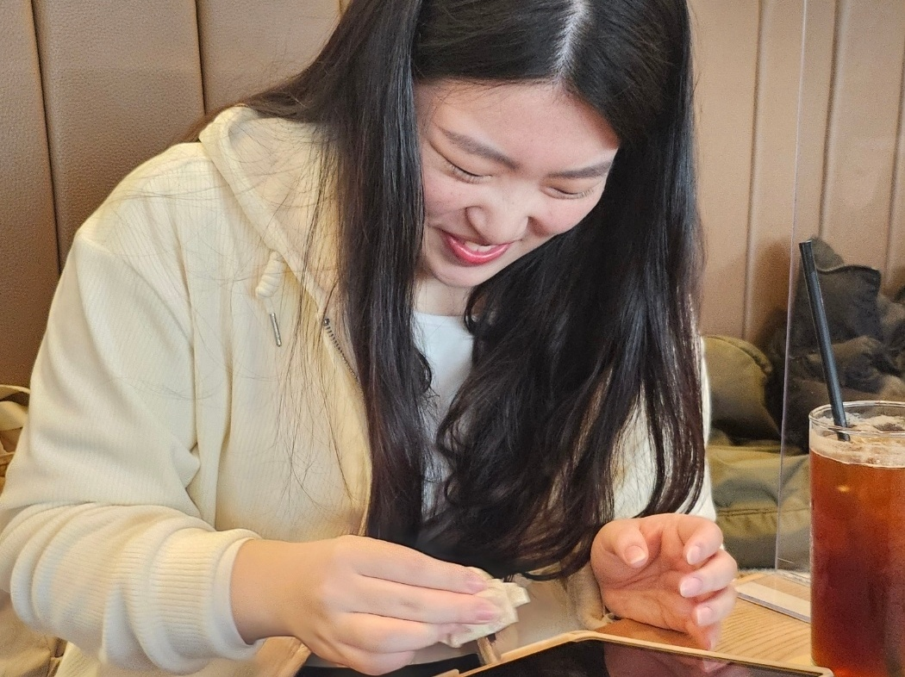

안녕하세요, 트위터 대통령 진수입니다. 친애하는 안세 자 영 자 님의 생신을 축하드립니다. 저도 더더욱 노력해서 세영님처럼 유명해지도록 하겠습니다.
4.5천
3.5천
622천

안녕하세요, 트위터 대통령 진수입니다. 친애하는 안세 자 영 자 님의 생신을 축하드립니다. 저도 더더욱 노력해서 세영님처럼 유명해지도록 하겠습니다.
새용이엉덩이만지고싶다

내 귀여운 세영이를 봐!!!!!! 내가 낳았어

[📸] 2025 N.Flying LIVE '&CON4 ENCORE :
Let's Roll &4EVER' Day 3
엔플라잉의 삶에 로그가 되어준 엔피아💜
우리 앞으로도 오래오래 보아요⚡️
#NFlying
#엔플라잉
#엔콘
#엔포에버
#Lets_Roll4EVER
지금의 세영이도 정말 아기세영?인데
2019년의 세영이는 정말진짜짱아기세영~~?!?!?!?
갓 태어나셨세영?!?!?!
솔직히 댓글에 박보검 얼굴 얘기 잔뜩 있는데 둘이 외모로 그렇게 큰 차이가 있나 싶어
완전 쫀덩더쫀덩슨한 상황

내가 세영이를 좋아하는 이유를 말해보자면.. 세영이는 정말 귀엽고 기특하고 사랑스럽고 착둥이이고 열심히 살고 근데 또 귀엽고 일도 열심히 하고 공부도 열심히 하고 토플은 언제 볼지는 모르겠지만 그래도 공부를 열심히 하고 있는 것 같긴 하고 알바할 때 지문 열심히 예습해서 재은이에게 알려주는 것도 기특하고 공부한 지문을 학생이 물어보면 뿌듯해하는 것도 귀엽고 재은이가 알려준 업무 방식 그대로 흡수해서 열심히 일하는 것도 정말 귀엽고 보이는 논리 열심히 만든 거 정말 기특하고 전화 업무 해본 적도 없는데 바들바들 떨면서 학부모님이랑 통화한 거는 진짜정말 정말정말 기특해 그런 세영이의 생일을 잊어버리지는 않고 생일파티를 잊어버린 쓰레기 자식이 설마 존재할까? 그럴리가 없지!! 그럴 거면 그냥 나가죽어라

더 깊이 빠져 죽어도 되니까 세영이의 생일을 축하해줄래
왜이리귀여우세영
뭘먹고그리귀여우세영
컴포즈커피먹고그리귀여우세영
 

왜 안 읽어? 이렇게 멋진 사진을 보냈는데
[✨2014 풍천초등학교 영어노래대회✨]
금상🏅: 4학년 2반 (안세영 외 5인)
수상을 축하합니다!🎉
251018 세영 스페이스어스 프리뷰
#세영
#안세영
#Seyoung
 





엔플라잉 이승협 여자친구와의 포토이즘 유출 논란
12살 어린 여자친구라고 함..ㄷㄷ
#이승협
#엔플라잉
#안세영
하루만 네 집의 폼롤러가 되고 싶어

똥이 안나와 쌰갈
동규
전방향 미소녀